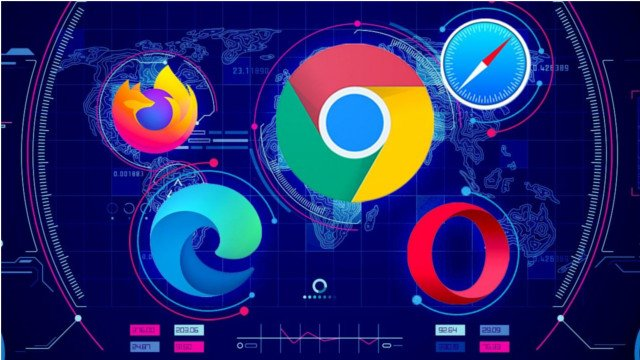
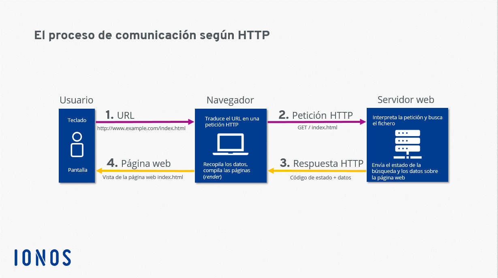

Navegadores Web
20 Septiembre, 2021

Para que los usuarios puedan navegar por Internet y ver la información que más les interesa en cada momento, utilizamos los navegadores.
Contenido
- ¿Que es un Navegador Web?
- ¿Cómo funcionan?
- Características comunes de los navegadores
- Tipos de navegadores
¿Qué es un Navegador Web?
Un navegador web es un programa que permite ver la información que contiene una página web. El Navegador se comunica con el servidor a través del protocolo HTTP y le pide el archivo solicitado en código HTML, después lo interpreta y muestra en pantalla para el usuario. El navegador interpreta el código en el que está escrita la página web y lo presenta en pantalla permitiendo al usuario interactuar con su contenido y navegar hacia otros lugares de la red mediante enlaces o hipervínculos.
La funcionalidad básica de un navegador web es permitir la visualización de documentos de texto, posiblemente con recursos multimedia incrustados.
Pero un navegador también nos permite almacenar información o acceder a diferentes tipos de documentos en el disco duro, etc, acceder a redes privadas, y crear marcadores (bookmarks). El acceso a otras páginas web a través de los hiperenlaces (hipervínculos o enlaces) se llama navegación.
¿Cómo funcionan?
Los navegadores se comunican con los servidores web por medio del protocolo de transferencia de hipertexto (HTTP) para acceder a las direcciones de Internet (URLs) a través de los motores de búsqueda. Además interactúan con complementos o aplicaciones (Plug-ins) para admitir archivos Flash y programas en Java (Java applets).
Además del HTTP, la mayoría de navegadores soporta otros protocolos adicionales, como FTP o HTTPS.
Todo este conjunto de protocolos de aplicación se apoyan en el TCP, que es el responsable de crear la conexión entre el ordenador del usuario y el servidor y de garantizar que los datos serán entregados en destino sin errores y en un orden idéntico al que fueron transmitidos. También gestiona los distintos puertos de comunicación de cada máquina.
Cada máquina conectada a internet tiene una dirección IP única que la identifica. Cuando escribimos una dirección web o URL, otras máquinas denominadas servidores DNS traducen o asignan el nombre de dominio que hemos escrito a su dirección IP, lo que permite al navegador encontrar el servidor de destino y pedirle el recurso solicitado.
Características comunes de los navegadores
Todos los navegadores incluyen la mayoría de las siguientes características: navegación por pestañas, bloqueador de ventanas emergentes, soporte para motores de búsqueda, gestor de descargas, marcadores, corrector ortográfico, y atajos del teclado. Para mantener la privacidad casi todos los navegadores ofrecen maneras sencillas de borrar cookies, cachés web y el historial.
Suelen utilizar el protocolo de seguridad HTTPS a través de los protocolos criptográficos SSL/TLS para proteger los datos de intercambio con los servidores web. También suelen contar con protección antiphishing y antimalware.
Tipos de Navegadores
Algunos de los navegadores o exploradores web más populares son:
INTERNET EXPLORER
Es el navegador más conocido por los usuarios, ya que viene instalado por defecto en todos los equipos nuevos que se compren con sistema operativo Windows, independientemente de la versión que traiga instalada.
Una de las principales características de este navegador es su sencillez a la hora de ser utilizado y que viene preinstalado de forma gratuita en los equipos nuevos, por lo que los usuarios no se deben preocupar de buscar ningún navegador para poder empezar a moverse por la red. Internet Explorer permite la navegación mediante pestañas, lo que nos evitará tener abiertas una gran cantidad de ventanas, además de ser compatibles con una gran cantidad de webs antiguas.
MOZILLA FIREFOX
Mozilla Firefox es un navegador de software libre y código abierto, por lo que cualquiera puede ayudar a su desarrollo. Actualmente es el segundo navegador más utilizado, por detrás de Internet Explorer. Es multiplataforma para varias versiones de Microsoft Windows, GNU/Linux, Mac OS X, y algunos sistemas basados en Explorer, e incluye el software de correo Thunderbird.
Una de las principales características, es la gran cantidad de addons o extensiones que hay desarrolladas para este navegador. Cada una de estas extensiones le aporta una nueva funcionalidad al navegador, pudiendo de esta forma disponer de un navegador, prácticamente a nuestra medida.
GOOGLE CHROME
Es el navegador creado por Google en 2008 y se basa en el proyecto de software libre y código abierto. Google Chrome combina tecnología sofisticada y un diseño minimalista, además de ofrecer una interfaz gráfica de usuario más sencilla y eficaz.
A través del motor de renderizado Webkit, Google Chrome soporta los estándares HTML, JavaScript y CSS, cuyo proceso de instalación no requiere reiniciar el navegador para empezar a funcionar, además de hacerse como proceso independiente, al modo de las pestañas, de manera que si una de las ventanas falla no afecta al resto ni al navegador.
Una de las principales ventajas de este navegador es la poca cantidad de memoria que utiliza, bastante menos que el resto de navegadores. Otra ventaja es la posibilidad de añadir extensiones, tal y como ocurre con Firefox, añadiendo de esta forma más utilidades al navegador.
SAFARI
Es el navegador creado por Apple Inc. el cual está integrado en el sistema operativo Mac OS X. De esta se destacan la velocidad, un diseño muy cuidado, la seguridad y las prestaciones que ofrece, incluyendo los recursos para diseñadores y programadores.
No sólo está disponible para productos Apple sino que es un navegador multiplataforma, pero su uso en otros sistemas, como Windows, consume más RAM que algunos otros navegadores, un punto en contra para ser utilizado, aunque como hemos comentado es uno de los más rápidos del mercado.
OPERA
Desarrollado por Opera Software Company, fue el primer navegador que implementó el sistema de pestañas, reconocido por su gran velocidad, seguridad y constante innovación, también por su soporte de estándares a través de su motor de navegación Presto. El mayor problema que tiene Opera es que es un poco lento en su versión para escritorio.
En su versión estándar incorpora una gran cantidad de utilidades, por lo que no necesita utilizar añadidos como ocurre con otros navegadores que hemos visto, además de ser uno de los navegadores que mejor respetan todos los estándares relacionados con el mundo web.